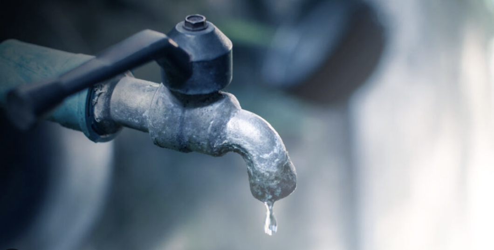

Fugas Crónicas en Llaves de Lavabos
Monitoreo y Detección:
Se identificó que el 35% de las llaves de los sanitarios de alumnos presentan goteo constante tras su uso.
Impacto: Una sola llave goteando llega a desperdiciar más de 30 litros de agua al día en horario escolar.
Acción inmediata: Sustitución de empaques desgastados y propuesta para la instalación de llaves temporizadoras de presión.
Meta: Reducir a cero el gasto pasivo en las zonas de lavado de manos.